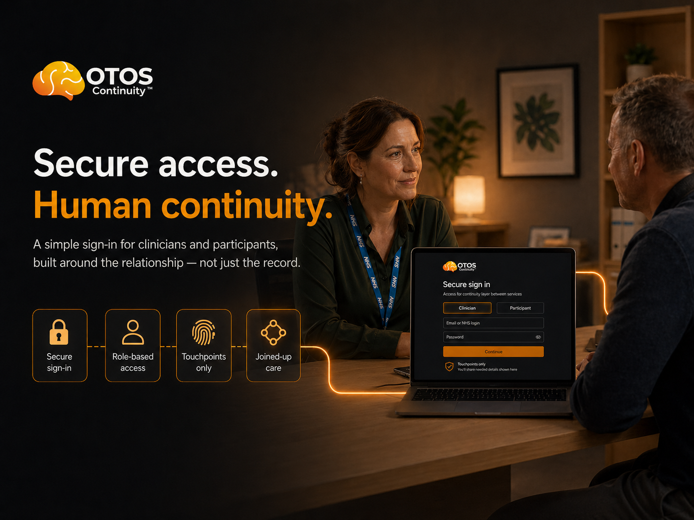

For CPFT ADHD Team
You retain total direction on pathway boundaries. OTOS only asks whether the waiting-period and suspected-ADHD thread can be made visible safely.
OTOS is proposing a bounded 12-week pre-pilot to test whether adults where untreated or unresolved ADHD may be driving addiction, relapse, crisis demand and waiting-list drift can be identified earlier, de-duplicated across services and routed toward the right ADHD pathway more safely. CGL, CRS, CPFT, GP, Right to Choose and QbTech-related touchpoints stay clinically distinct; OTOS holds the continuity thread between them so the right people can see that addiction support, mental-health touchpoints and suspected ADHD next steps are part of the same journey.

"I've been briefed on OTOS Continuity™ — a non-clinical continuity layer for adults where suspected ADHD, addiction and service drift overlap. I understand the proposed 12-week pre-pilot would not diagnose, prescribe, triage clinically or direct ADHD pathway decisions. I would be willing to explore whether suspected ADHD can be made visible, receipted and safely held between addiction, community and ADHD pathway touchpoints while the appropriate clinical route is agreed."
Edit as you see fit. Two minutes to send. No commitment beyond the note.
Send this note →This route only works if the assessment pathway can see the wider journey without taking ownership of it. CGL / CRS may first spot suspected ADHD; Addenbrooke's may see the crisis point; CPFT ADHD defines the safe clinical boundary; RCE, Mind, WorkWell and Jo Fenton may keep the person connected while the route is agreed.
You retain total direction on pathway boundaries. OTOS only asks whether the waiting-period and suspected-ADHD thread can be made visible safely.
Where addiction teams suspect ADHD is blocking recovery, the next step can be logged without asking keyworkers or community teams to diagnose.
The test is whether better visibility helps find the right cohort earlier, reduce duplication and stop people being treated as separate disconnected cases.
The immediate ask is not to create a new emergency ADHD pathway. It is to help shape a small, credible pre-pilot: who belongs in the cohort, how suspected ADHD should be logged, how duplicate visibility is avoided and what information should be visible between addiction, community and ADHD pathway partners.
The longer-term question is more important: if the pre-pilot shows that repeat crisis demand is clustering around unresolved ADHD, should the local system then discuss whether a clearer pathway response is needed?
OTOS is the continuity mechanism, not the clinical decision-maker. It helps services see that the same person is touching addiction support, mental-health support, community recovery and suspected ADHD next steps — without merging records or sharing clinical notes.
CGL can see that the person is connected to CPFT-enabled ADHD pathway touchpoints. CPFT can see that addiction or community support is still holding the person. Neither side sees the other's clinical notes.
Touchpoints and handoff receipts sit on the continuity layer only. Human decisions remain with each service team.
My own route shows why this matters. I had a previous private ADHD diagnosis, previous NHS shared-care prescribing, and then years where the thread did not hold. During that gap, self-medication took over and addiction became the way unmanaged ADHD was being carried.
Seven years later, after crisis, detox and recovery support, I had to return privately for reassessment and medication review. My treatment was changed, Elvanse has been not only more effective but LIFE CHANGING and I now have a clinical update letter asking CPFT to help me access effective ADHD treatment through the NHS route.
That letter is not being used to blame a GP practice or force a prescribing decision. It shows the operational failure OTOS is built around: diagnosis, medication review, shared care, waiting lists, addiction support and pathway ownership can all sit behind different doors. The person is left carrying the thread.
For a large percentage, addiction treatment will struggle to stick while ADHD remains untreated or unresolved. OTOS helps make that subgroup visible earlier, keeps people connected while they wait and lets the clinical pathway decide what should happen next.
The April 2026 clinical update is included as an example of why GP, assessment, review and specialist ADHD touchpoints need visible continuity status. It confirms treatment history and route difficulty, but it does not ask any partner to prescribe differently.
OTOS helps existing services hold the thread between diagnosis, handoff, follow-through and review. It does not create a clinical record, automate triage, replace assessment or bypass the ADHD team.
Repeated addiction relapse, crisis contact, missed follow-through and suspected ADHD can be seen as one pattern, not separate disconnected events.
The pre-pilot can help define what evidence, touchpoints and pathway history suggest someone may need earlier ADHD pathway review.
CGL, CRS, CPFT, GPs and community partners can see the continuity state of the same journey without merging systems or exposing each other’s records.
People do not disappear silently while services decide the right next step. The thread stays alive through light touchpoints and receipts.
Where ADHD may be blocking recovery, OTOS keeps that possibility visible so addiction support is not left treating the resulting condition alone.
OTOS surfaces signals. The partner team makes the decision. No automated care decisions, no diagnosis, no prescribing.
If the pre-pilot shows repeat crisis demand clustering around unresolved ADHD, the system has stronger local evidence to discuss whether a clearer pathway response is needed.
This page is not asking a GP, Right to Choose provider, QbTech or CPFT to take responsibility for the whole journey. It asks a narrower question: what continuity status could be safely visible while the person moves between referral, assessment, review and support?
The ask is not: please endorse OTOS. The ask is: please help define whether a safe, bounded continuity signal could help identify and hold adults already visible to addiction, GP, crisis and community services where suspected ADHD may be the underlying condition driving repeated harm.
Can a non-clinical continuity layer help identify the highest-risk suspected ADHD cohort earlier, reduce duplication across services and keep people connected while the right ADHD route is agreed?
A named person to advise what language, boundaries and workflow would be safe across GP, Right to Choose, QbTech-related assessment and ADHD pathway touchpoints.
Help define what visible signals suggest someone may belong in the 12-week cohort, without creating accidental diagnosis or pressure on any one service to own the whole route.
Map where referral, assessment or review signals should sit so the route is visible without clinical delegation.
One note. One conversation. That is all it takes to start.